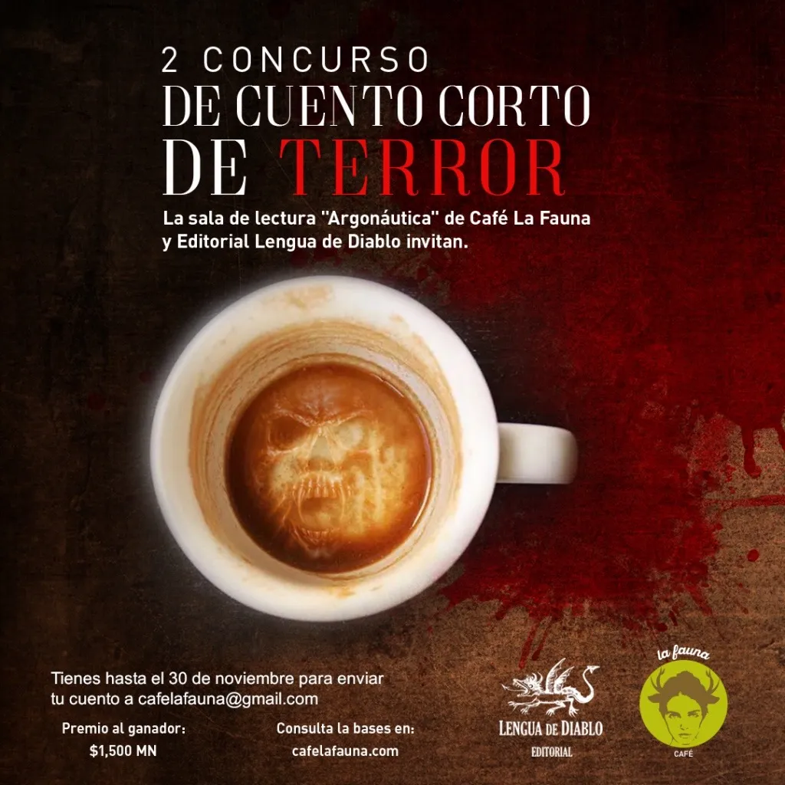

El Ciclo y Otros Cuentos de Terror (La Elección del Lector)

Elegir un cuento ganador en un concurso es una tarea complicada. El jurado debe seleccionar el cuento que, a su criterio, sea el mejor para recibir el premio. Eso significa elegir entre otras buenas historias. En esta edición el cuento ganador fue “El ciclo”, de Ben durán, adicional a ello, tomando en cuenta a los lectores, creamos esta sección en la que lectores asiduos de Argonáutica, la sala de lectura de Café La Fauna, eligen un cuento distinto al ganador como “la elección del lector”. En la segunda edición del concurso corresponde al cuento “En el armario” de Jazmín Zarco Uribe.
El cuento fue seleccionado por José Luis Alarcón, lector asiduo, donador de libros y visitante de Argonáutica.
En palabras de José Luis:
“De los cuentos incluidos en esta antología, el que más me gustó es “En el armario” de Jazmín Zarco Iturbe. Me gustó por su sencillez y la inocencia con la que se relata desde el principio: «En realidad, no sé bien cómo explicarlo». Me parece que en su brevedad, comparte los suficientes detalles para imaginar mucho más de lo que está escrito, y eso, como lector, me gusta porque me mete completamente en la escena.
Te invito a leerlo:
En el armario
Jazmín Zarco Uribe
En realidad, no sé bien cómo explicarlo. Teníamos un armario. De ahí salió el perro. Era un armario normal, como cualquier otro: un metro setenta de alto por uno de ancho, dos puertas de madera pintadas de blanco, dos largas manijas de metal.
Mamá no lo abría casi nunca. Dentro sólo se guardaban los abrigos formales, los vestidos de fiesta que ya nadie se ponía, y un álbum con fotos donde todos se veían felices, y yo nunca salía. Ahí me escondía cada vez que escuchaba los gritos.
No era tan incómodo. Tenía galletas y lechitas de chocolate que sacaba a escondidas de la cocina, y una gran lámpara amarilla que había encontrado en la cochera. La ponía parada detrás de mí, apuntando hacia arriba, para que la luz no me lastimara los ojos. Aunque todo se llenaba de sombras, podía ver bien todo lo que hacía. No me aburría porque también me había robado un cuchillo, pequeño pero filoso, con el que hacía grabados en las puertas. Al principio, tallar la madera me daba mucho trabajo, las líneas se veían raras y me daba miedo lastimarme, pero luego le agarré el modo. En poco tiempo mejoré muchísimo.
Grababa la vida que me imaginaba: el avión del viaje que mamá y yo hacíamos a otro país; la casita a la que nos mudábamos; el jardín enorme con un árbol, un columpio y hasta un perro. Era del perro de lo que estaba más orgulloso. Fue lo último que alcancé a hacer. Me tomó varias semanas pero valió la pena. Lo copié de una foto que encontré en el álbum y quedó muy real. Lo que no me gustó tanto es que se veía como enojado. Yo no entendía por qué, si hasta le había hecho su casita para que no pasara frío y los trastes para su comida y su agua. Pensé que quizá se aburría ahí solito y quería grabarle a un amigo para que tuviera con quien jugar, pero justo cuando iba a comenzar, la puerta del armario se abrió. La luz, los gritos y el miedo me aturdieron. Vi a mamá tirada en la alfombra. No sé cómo, pero el perro salió corriendo. Brincó sobre papá y le enterró en la espalda los colmillos afilados. Yo intenté detenerlo, pero no pude. Quizás no pudo controlar su enojo, por ver a mamá así, o por llevar tanto tiempo encerrado en el armario. No lo sé. En realidad, no sé bien cómo explicarlo.
El Lector:
José Luis Alarcón.
Contador Público, consultor de pequeños negocios y profesionistas. Practico yoga y disfruto caminar. Difundo actividades artísticas locales en foros culturales independientes. Acerca de mí como lector. Leo y tomo café. Leo y escucho música. Leo y me dan ganas de escribir, pero no escribo y mejor sigo leyendo.
Realizamos el concurso en conjunto con Lengua de Diablo, editorial independiente que publica textos fantásticos, de ciencia ficción y, por supuesto, de terror.

Descarga la publicación con cuentos seleccionados, que incluyen “El ciclo” y “En el armario” aquí:
lenguadediablo.com/elciclo
Visita Café La Fauna y encuentra comida, café y libros.